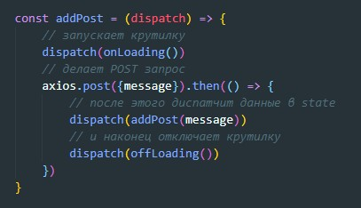
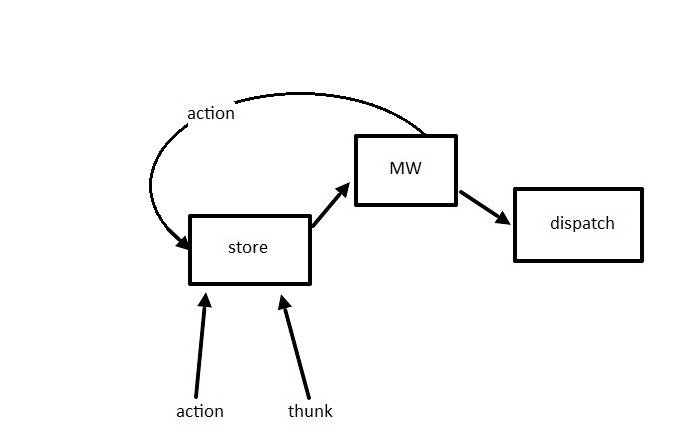
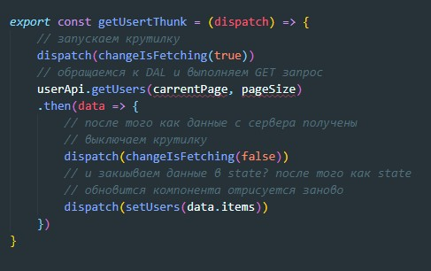
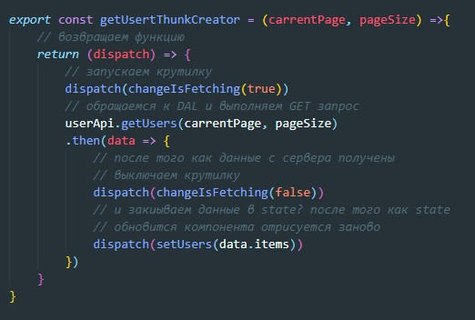
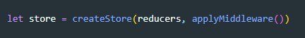
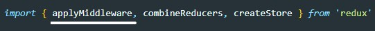
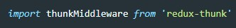
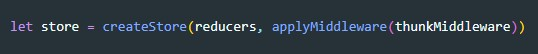
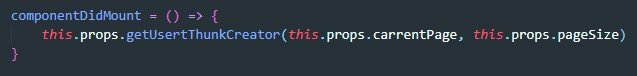

thunk - это функция, которая выполняет ассинхронную задачу и которая умеет диспатчить обычные action, плюс этот же thunk можно задиспатчить
Пример
Важно то что thunk мы сами не запускаем, его запускает store. Но как нам передать данные в thunk, например что бы отправить сообщение нам как минимум нужен текст сообщения? В этом нам помогут замыкания. thunk мы будем создавать с помощью thunkCreator и в качестве аргумента будем передавать необходимые данные.
По сути store не умеет диспатчить функции. В dispatch приходят action (объект). Если просто задиспатчить функцию, то store отругается. Но мы же в dispatch будем закидывать thunk - а это функция. Здесь нам на помощь придет midle ware
Midle ware - это промежуточный слой (функция) которая будет проверять, что идет в dispatch. Если придет action то MW передаст его в dispatch, если придет thunk, то MW запустит thunk, получит результат, если результат окажется action то передаст его в dispatch, если окажется что вернулась еще один thunk то он повторит операцию.
Открываем reducer и создаем там функцию
Теперь что бы наша thunk получала данные, применим замыкание, т.е. оборачиваем thunk в функцию которая вернет нам thunk
Переходим в Redux где мы создавали store и функции createStore передаем второй параметр applyMiddleware()
Перед этим обязательно импортируем эту функцию из redux
В applyMiddleware мы должны передать middleware который нужно проинсталировать
npm install redux-thunk --saveПосле того как инсталяция закончилась импортируем функцию
thunkMiddleware - название произвольное, но именно эту функцию мы передаем applyMiddleware
Пробрасываем thunk через пропсы и вызываем его передавая нужные параметры.
